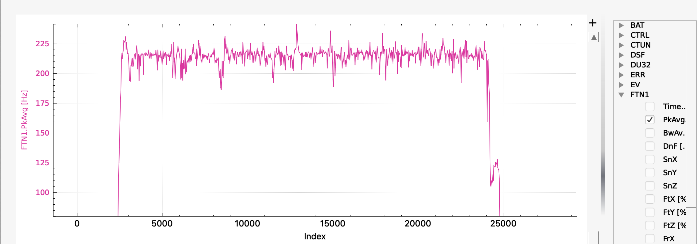
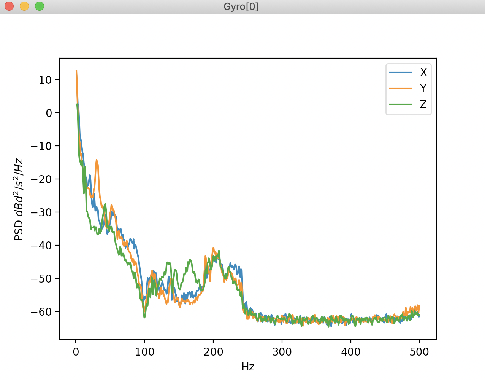

[copywiki destination=”copter,plane”]
Initial Flight and Post-Flight Analysis¶
Perform a hover flight of at least 30s in altitude hold and download the dataflash logs without the harmonic notch being enabled.
Graph the log element FTN1.PkAvg which represents the FFT’s energy-weighted estimate of the average noise frequency for roll and pitch.
On the graph there should be a fairly consistent estimate of the noise peak that corresponds to the motor rotational frequency. On a smaller Copter this is likely to be around 200Hz and on a larger Copter/QuadPlane 100Hz or so. Here is an example from a 5” quad running on a Pixracer. Once the pilot has throttled up there is a fairly consistent noise level at about 220Hz:
{kind=link}
If a consistent estimate is obtained, you can then enable the harmonic notch, as described in In-Flight FFT Based Harmonic Notch Setup.
In this flight the dynamic harmonic notch was enabled and set to track the FFT determined frequency and FFT analysis of the post-filter log shows that the gyro noise has been effectively eliminated:
{kind=link}